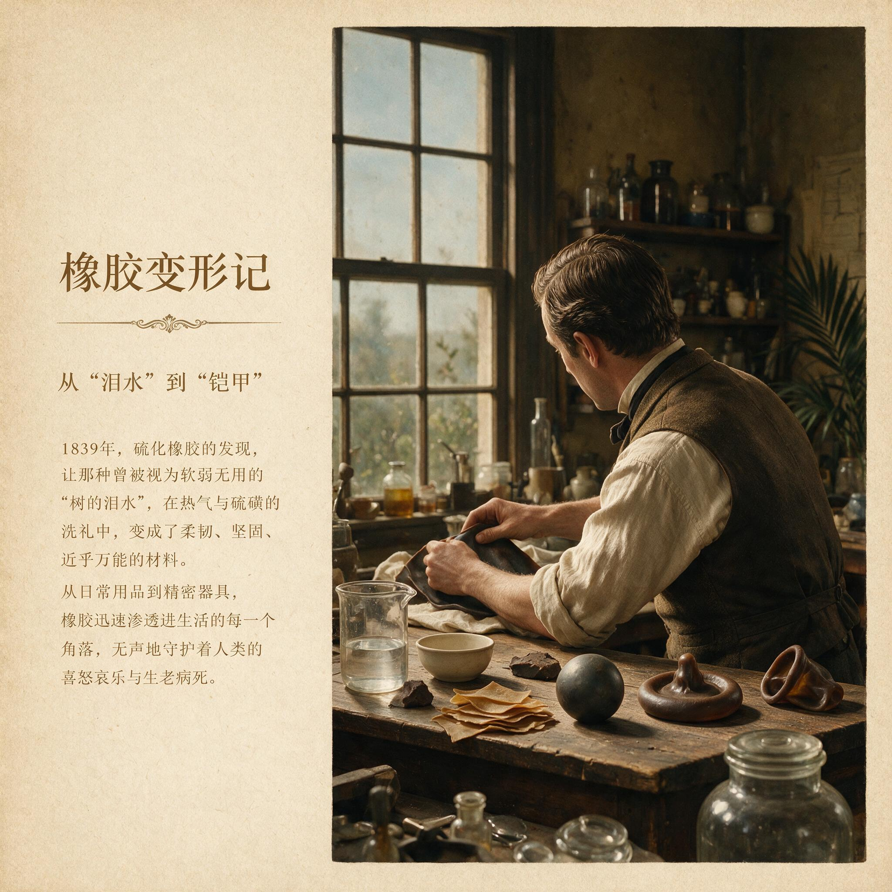

第 4 章
橡胶变形记
亚马逊盆地的清晨，雾气还没有从树冠上散尽。一个割胶工人沿着昨天标记过的路径穿过灌木丛，肩上挎着一只铁皮桶，腰间的皮带上挂着一把短柄砍刀。他在一棵三叶橡胶树前停下来，用手指摸了一下树

橡胶变形记：历史出版插图
AI 生成插图，非史实影像。
干上已有的切口——那是三天前割开的，斜斜的V形槽边缘已经结了一层暗褐色的凝固胶膜。他把砍刀在手里转了一下，在旧切口下方重新切出一道新鲜的斜面。白色的胶乳开始从树皮断裂处渗出来，先是缓慢的一滴，然后连成一条细线，顺着槽口流进挂在树干上的小桶里。
空气里有一股淡淡的植物腥气，混着腐叶和湿土的味道。这个工人不会想到，他桶里的这些乳白色液体，在半个世纪之后将成为改变人类生育行为的第一种工业材料。这是1830年代的巴西亚马逊地区。三叶橡胶树还是一种纯粹的野生植物，散布在数百万平方公里的热带雨林中，没有任何人工种植。割胶完全依赖对野生树木的寻找和手工采集。一个工人一天能走十几公里，找到二三十棵适合割胶的树，每棵树每天只能产出几十毫升胶乳。
胶乳在高温潮湿的空气中极易腐败——如果不在采集后几小时内做防腐处理，其中的橡胶微粒就会凝结成块，变得无法加工。当时最常用的防腐方法是烟熏：工人把胶乳涂在木棍上，放在篝火的浓烟中反复旋转烘干，制成一团团深褐色的“烟熏胶片”。这些胶片经过河运和海运，从马瑙斯或贝伦港装船，运往欧洲和北美的工厂。
亚马逊的橡胶贸易在1830年代还远未达到后来的规模。马瑙斯和贝伦港的仓库里堆积着从各个支流运来的烟熏胶片，货主用粉笔在包装袋上写上重量和产地。船期不定，河流水位变化决定了一年中的运输窗口。欧洲买家的订单通过少数几个出口商转手，价格波动极大。
橡胶是热带世界的产物，它的供应链却完全掌握在以利物浦、纽约和汉堡为中心的商人手里。这种跨越热带雨林、港口、工厂和消费市场的链条本身就是一种早期全球化的样本。但当时的欧洲买家对橡胶的看法极为矛盾：一方面，它的弹性和防水性让人着迷；另一方面，它不可靠的热力学性质让几乎每一种尝试都以失败告终。
天然橡胶拥有两个独特的物理性质，是当时任何其他材料都不具备的：弹性和防水性。它可以被拉伸到原长度的数倍，外力撤去后又能恢复原状；它不溶于水，在常温下对酸和碱都有相当好的耐受性。这些性质让橡胶在理论上成为制造屏障器具的理想材料——它柔软、贴合、可以形成密闭的隔离层。
然而天然橡胶有一个致命的缺陷：它在低温下会变硬变脆，在高温下又会变软发黏。用天然橡胶制成的雨衣在冬天像铁板一样僵硬，到了夏天则黏在一起无法分开。这个缺陷让早期橡胶制品始终停留在实验室样品和少数奢侈品阶段，无法进入大规模实用。
化学家花了很长一段时间才明白，问题出在橡胶的分子结构上。天然橡胶由许多异戊二烯单元组成的长链分子构成。这些长链在不受外力时彼此独立滑动，温度一高，热运动加剧，材料就发黏；温度一低，链段冻结，材料就变脆。要让橡胶真正可用，必须找到一种方法把这些独立的分子链连接起来，形成一张三维网络。
19世纪初的欧洲化学实验室里，已经有人尝试用松节油、硝酸和其他化学品处理橡胶，但都没有取得稳定的结果。问题的解决来自一系列看似偶然的实验。1839年冬天，美国马萨诸塞州的一个五金店主查尔斯·古德伊尔在多年失败的实验之后，偶然将混有硫磺的橡胶掉在了灼热的炉子上。他预期橡胶会像往常一样熔化成一滩黏稠的黑色液体，但这次出现的却是一种他从未见过的形态：橡胶表面变成了深棕色，质地坚硬而有弹性，边缘没有熔化，而是像皮革一样保持了形状。古德伊尔把这个烧焦的块状物捡起来，发现它在冷却后仍然保持弹性——而且不再发黏。
这个偶然事件开启了硫化橡胶的时代。硫磺在高温下与橡胶分子链发生交联反应，使原本独立的线形分子链编织成三维网络结构。这个化学变化从根本上改变了橡胶的热力学性质：硫化后的橡胶在寒冷中不再变脆，在炎热中不再熔化，同时保持了天然橡胶的弹性和防水性。橡胶第一次成为一种可以标准化生产的工业材料。古德伊尔的发现并不是孤立的。
几乎在同一时期，英国化学家托马斯·汉考克也独立开发出了硫化工艺，并在1843年获得了英国专利。两人后来为专利权的归属争执不休，但历史最终把这个过程记录为一项多点突破，而不是任何单独个体的灵光一现。硫化技术很快从实验室进入工厂。1840年代到1850年代，英美两国的橡胶制造厂开始用硫化橡胶生产各种工业品和日用品：传送带、密封垫圈、防水布、鞋底、雨衣。
橡胶从一种不可靠的热带奇物，变成了可以标准化生产的工业原料。工厂开始建立严格的质量检验程序：每一批橡胶原料在硫化前都要经过清洗、塑炼和混炼，硫磺的比例、加热的时间和温度都被记录下来。这些程序不依赖医学知识，也不依赖任何生育理论。它们只解决一个问题：如何让材料在每一批产品中保持一致。
在这个从实验室到工厂的转化过程中，避孕器具的材料基础发生了根本性的改变。在硫化橡胶出现之前，屏障避孕的主要材料是动物肠衣——通常是羊肠或鱼鳔。
肠衣避孕套的制作工艺复杂，需要将肠衣反复清洗、刮薄、晾干、裁剪、缝合，成品价格昂贵，而且容易破裂或腐败。一套肠衣避孕套的价格在18世纪末相当于一个熟练工人几天的工资。这意味着它只能是一种上层阶级的消费品。18世纪欧洲的避孕套主要出现在贵族和富商阶层中，其功能往往兼具防病和避孕的双重目的。伦敦和巴黎有一些专门的手工作坊生产这类产品，客户名单从不公开，交易通过私人渠道完成。这不是一种可以大规模普及的商品。
硫化橡胶改变了这一切。橡胶避孕套的制作工艺本质上是一个浸渍成型过程：将圆柱形模具浸入液态橡胶中，取出后加热硫化，再从模具上剥离。这个过程可以重复进行，一个模具一天可以生产数十个成品。橡胶避孕套比肠衣制品更薄、更强韧、更一致，而且——这一点至关重要——可以反复使用。早期的橡胶避孕套广告中明确标注“可清洗后重复使用”，这是肠衣制品无法做到的。成本的大幅下降使避孕套的价格从相当于几天工资降到几个小时工资的水平。
到了1860年代，欧美主要城市的药剂师柜台和邮购目录中已经可以买到橡胶避孕套，价格虽然仍不算便宜，但已经进入了城市中产阶级的消费范围。这种价格下降并非来自某个医学机构的推动，而是来自橡胶工厂之间逐渐形成的竞争压力。一家工厂改进了模具设计，另一家就会用更薄的壁厚来回应；有人推出了带卷边和贮存囊的类型，竞争对手就推出不同长度和颜色。
产品目录上的规格越来越多，标准化没有消除差异，反而催生了更多的市场细分。这些变化遵循的是工业生产和商品销售的内在逻辑，而不是人口健康政策的目标。避孕套从贵族情趣品变成城市中产阶层的私人采购品，其转折点并不在妇科教科书或人口统计报告里，而在工厂的订单本和邮购公司的价目表中。
同样的材料突破也发生在子宫托上。子宫托是一种放置在阴道内覆盖宫颈口的屏障器具，其原理是物理阻隔精子进入子宫。在橡胶硫化之前，子宫托的制造材料五花八门：金属、象牙、木材、蜡、甚至半宝石。
这些材料要么过硬导致不适，要么多孔容易滋生细菌，要么根本无法做到与人体解剖结构的贴合。19世纪早期的妇科医生在诊所中为个别病人定制子宫托，每一件都是手工打磨的孤品——这个过程本质上和珠宝匠的工作没有区别。子宫托因此是一种极小众的医疗器械，只有能够负担私人妇科诊疗费用的女性才能获得。
硫化橡胶的弹性和可塑形性恰好解决了贴合度的问题。橡胶子宫托可以在模具中制成标准化尺寸，同时因为材料本身的弹性，能够适应不同个体的解剖差异。制造商开始生产一系列不同直径的子宫托，医生可以根据病人的具体情况选择合适的型号——这已经是一种准工业化的配适逻辑了。更重要的是，橡胶子宫托不再需要医生手工打磨，工厂可以批量生产。价格降下来了，使用门槛也随之降低。到了1880年代，子宫托已经从妇科诊室的特殊器械变成了邮购目录中的常规商品，与疝气带、弹性袜和橡胶手套列在同一页上。在这一转变中，工业资本第一次实质性地介入了身体管理权。
所谓身体管理权，是指对生育过程进行干预、控制和规范的社会权力。在硫化橡胶之前，这种权力的物质载体主要掌握在教会、医生和家庭长辈手中，民间实践只能借助经验暗河在权力缝隙中流动。现在，橡胶工厂和邮购公司无意中成了身体管理权的新玩家。它们不宣讲道德，不规定义务，也不提供系统的医学指导。它们只是把产品放到市场上，用价格和渠道让一部分人能够获得它。
但正是这种不介入宏观治理的姿态，让工业体系得以绕过宗教和医学正统的审查。工厂主不需要回答“避孕是否符合道德”或者“避孕是否危害健康”这类问题。他们只需要回答一个更简单的问题：有没有人愿意买这个产品。
市场需求的信号通过商业渠道传递回来——药剂师发现越来越多的顾客询问避孕器具，邮购公司发现某些商品的订单量在上升，橡胶制品厂意识到有一种产品的利润率远高于雨衣和鞋底。这些信号不需要经过医学伦理委员会的审查，也不需要获得教区的批准。它们直接转化为生产决策：增加生产线、改进模具、降低价格、扩大销售网络。
这就是本章的核心论断：橡胶硫化技术是避孕从经验摸索走向工程化的第一个真正动力，它绕过了宗教和医学正统的阻力，直接从工业制造层面打开了器物普及的可能。这条技术扩散路径在避孕史上具有独特的地位。它证明避孕技术的现实化可以独立于国家生育政策和医学权威而启动。19世纪上半叶的医学界并没有对避孕技术提出明确的需求。
事实上，主流医学界对避孕的态度总体上是冷淡甚至敌意的。1840年代到1860年代，欧美医学期刊上偶尔出现的关于避孕的讨论，大多是从道德角度谴责避孕行为，或者从病理学角度论证避孕对健康的危害。
医生们普遍认为，生育是自然的生理过程，人为干预必然导致疾病。这一立场与教会的社会训导高度一致。天主教会对避孕的明确谴责由来已久，新教各教派虽然态度相对温和，但也普遍不鼓励在婚内使用避孕手段。在这样的医学和宗教双重正统之下，避孕技术的进步不可能从医学体系内部启动。
橡胶工业恰恰提供了一条完全不同的路径：它不需要改变医学理论，也不需要挑战教会权威，它只需要一种工业材料的物理性能符合要求。因此，那种认为避孕技术演进主要由医学科学进步驱动的解释，在这一段历史上并不成立。硫化橡胶避孕器具的起点不在医院和实验室，而在热带雨林的割胶刀下、在橡胶工厂的模具里、在邮购公司的货架上。医学知识的参与要等到更晚的时期才会到来。工业材料先行，是本章所叙述的这一轮突破最清晰的特征。
然而，技术有了，并不意味着使用者真正知道如何选择和使用。这正是硫化橡胶避孕器具进入市场后立即遭遇的困境。避孕套和子宫托的生产工艺相对简单，但正确使用它们需要一定的知识：如何选择合适的尺寸，如何正确放置，如何清洁和保存，何时需要更换。这些知识在经验暗河中虽然存在——民间助产士和避孕实践者积累了大量的经验——但它们从未被系统地整理和公开传播。
第三章描述的知识封锁在这里产生了直接的后果：当工业产品突然变得可获取时，大多数潜在使用者面对的是一个他们从未接受过使用教育的陌生器具。制造商很快意识到了这个问题。从1870年代开始，一些避孕器具厂商开始在包装中附上使用说明书。但这些说明书面临一个两难处境：如果写得太详细，就可能触犯多国现行的淫秽法；如果写得太含糊，用户就看不懂。
英国1857年的淫秽出版物法（Obscene Publications Act）和美国1873年的康斯托克法（Comstock Act）都将“传播避孕信息”视为违法行为，违者可能面临罚款和监禁。制造商不得不在法律边缘小心翼翼地措辞。典型的说明书会使用极其模糊的语言，将子宫托描述为“女性卫生用品”或“内部支撑器”，将避孕套称为“防护套”或“卫生袋”。使用方法的说明往往只有寥寥数语：“置于适当位置”“使用前后清洗”“适时更换”——这些短语对于从未见过实物的人来说几乎毫无意义。
邮购目录中的广告同样被迫使用暗语系统。一份1880年代的美国邮购目录中，橡胶子宫托被列为“女士专用橡胶制品”，旁边的商品编码和价格之外没有任何说明文字。同一目录中的疝气带有详细的尺寸表和佩戴示意图，但子宫托只有型号编号。购买者需要事先知道某个型号对应什么用途，否则只能盲目下单。
有些公司会单独邮寄一本加密的小册子给曾经购买过相关产品的顾客，用晦涩的医学术语和委婉语解释使用方法。法律的限制不仅影响知识传播，也直接阻碍商品流通。
康斯托克法实施后，美国邮政局获得了查扣含有“淫秽物品”邮件的权力。被查扣的物品范围极广，不仅包括避孕器具本身，也包括任何“暗示或描述”避孕方法的印刷品。邮政检查员在各地邮局开箱检查，没收可疑包裹，追查寄件人。
制造商的对策是将产品伪装成其他商品：避孕套被装在标有“手指套”或“橡胶管”的盒子里邮寄，子宫托被标注为“医用弹性环”。一些公司甚至在包装上印上假的医疗器械认证标志，以迷惑检查人员。执法者和制造商之间展开了一场漫长的猫鼠游戏：每当检查员学会识别一种新的伪装，工厂就换一种新的标签。双方都在根据对方的行动调整策略，法律条文在这一过程中不断被重新解释，但它的核心禁止始终没有松动。
欧洲大陆的情况略好一些，但各国差异很大。法国在19世纪对避孕器具的管制相对宽松，巴黎的药剂师可以比较公开地销售橡胶避孕套和子宫托。德国在1871年统一后，各邦的法律不一，避孕器具在北德地区流通较自由，在南德天主教地区则受到严格限制。
英国的情况最为复杂：法律条文禁止传播避孕信息，但实际执法力度因地区和社会阶层而异。伦敦的富人区药店可以半公开地销售避孕器具，而工人阶级聚居区的同类交易则经常遭到警察突击检查。
这种双重标准意味着，硫化橡胶带来的技术突破并没有均等地惠及所有社会阶层。中产阶级女性可以通过私人医生或可靠的邮购渠道获得子宫托，而工人阶级女性仍然主要依赖经验暗河中的传统方法——草药冲洗、海绵浸泡、或者干脆什么都不用。国家的生育政策在19世纪尚未像20世纪那样系统介入，但法律已经在制造新的分配差异。反淫秽法的表面目标是维护公共道德，实际后果却是重新划分了获取避孕手段的权利边界。
一个人能否得到一只橡胶避孕套或一个子宫托，不取决于他是否需要，而取决于他住在哪个城市、属于哪个阶层、能否读懂暗语、是否拥有可以避开检查的私人邮寄地址。价格壁垒被知识壁垒和执法壁垒所取代。技术突破真实地降低了器物的生产成本，却没有降低获取它的社会成本。
这种知识壁垒的后果是具体的、可测量的。19世纪最后三十年，尽管硫化橡胶避孕器具的生产技术已经相当成熟，价格也已经降到城市中产家庭可以负担的水平，但欧美各国的婚内生育率下降呈现出明显的阶层差异和时间差。
中产阶级家庭率先开始显著控制生育数量，工人阶级家庭的生育率下降则滞后了一到两代人。历史人口学的研究表明，法国在19世纪上半叶就已经出现了全国性的生育率下降趋势，但这一趋势的早期推动力主要来自上层和中产阶级。英国和美国在1870年代之后才出现大规模的生育率下降，时间上与硫化橡胶避孕器具的商业化大致吻合，但因果关系需要谨慎解读——生育率下降是一个多因素驱动的复杂过程，工业化和城市化带来的经济激励变化可能比避孕技术本身的进步更为重要。
然而，技术的作用不能被低估。至少在一个关键点上，硫化橡胶提供了之前所有避孕方法都不具备的特质：可靠性。草药冲洗的有效率不稳定，体外排精依赖男性的自制力和技巧，安全期计算在19世纪的医学条件下几乎不可能准确。动物肠衣避孕套虽然有效，但破裂率很高。硫化橡胶避孕套在正确使用的情况下，其物理屏障作用是确定的、可重复的、不依赖个体技巧的。
这种可靠性意味着，当一个家庭决定控制生育时，他们第一次拥有了一种可以稳定执行这个决定的工具。决定和执行之间的鸿沟被缩小了。但在实际操作中，这个鸿沟仍然是巨大的，因为可靠性的实现需要使用者具备必要的操作知识。
子宫托的情况则更为复杂。它的有效性高度依赖正确的尺寸选择和放置技巧。一个不合适或放置不当的子宫托几乎形同虚设。这就回到了前面提出的问题：技术有了，但知识没有跟上。
19世纪后期的医学文献中偶尔会提到子宫托的使用，但这些记载往往出现在妇科教材的边缘章节或者关于“女性疾病”的讨论中，从未成为系统的避孕教育内容。医学院不教授避孕技术，医院不提供避孕服务，医生在临床中面对病人的相关询问时往往以沉默或道德说教回应。知识公共化的机制完全缺失。这一缺失的直接后果是，硫化橡胶避孕器具的实际使用效果远低于其技术潜力。
当时没有人做过系统的有效率统计——这类研究要到20世纪才会出现——但从零星的临床记录和民间记述中可以推断，错误使用导致避孕失败的情况非常普遍。子宫托被放置在错误的位置，避孕套在使用过程中滑脱或破裂后不知如何处理，清洁不当导致感染，重复使用次数过多导致材料老化失效。
每一个失败案例背后都是一个没有获得足够使用知识的个体——通常是女性。她们手里拿着一个工业生产的高质量橡胶制品，却没有人告诉她们怎么用。有些女性从母亲或姐妹那里学到了使用方法，有些从助产士那里获得了指导，有些则完全依靠试错。
那些从经验暗河中继承下来的传统配方——草药冲洗、坐浴、海绵浸泡——并没有因为橡胶器具的出现而立即消失，而是与新器具并存，有时互补使用，有时相互干扰。一个同时使用子宫托和草药冲洗的女性，可能并不知道两者的作用机制是重叠的，也可能因为冲洗液中的化学成分加速了橡胶老化。经验暗河没有消失，但它也没有被整合进工业产品的知识体系中。
两种知识形态在同一批女性身上并行不悖，却无法形成统一的公共知识。这正是硫化橡胶突破所未能跨越的障碍：工业体系能够制造出标准化的屏障器具，却无法把使用这些器具所需的知识也标准化地传递出去。这条鸿沟——工业制造能力与公共知识体系之间的鸿沟——是硫化橡胶突破所未能跨越的障碍。
材料科学可以解决“能不能造出来”的问题，但解决不了“会不会用”和“让不让用”的问题。后两个问题涉及的是知识传播和法律规制，它们不服从工业资本的效率逻辑。制造商可以偷偷卖产品，但不敢公开教使用方法；用户可以偷偷买产品，但找不到可靠的学习渠道；医生掌握了相关解剖知识，但受制于职业道德和法律风险不能提供指导。三方各自被困在自己的角色限制里，形成了一个奇特的僵局：产品在流通，知识在暗处，法律在明处，而使用者夹在中间。
1873年3月，美国国会通过康斯托克法的那一天，纽约邮政局的检查员们开始了他们的新工作。
他们打开一个个包裹，翻查一本本目录册，将他们认为“淫秽”的物品挑出来放在一边。查扣清单上的项目五花八门：除了明显的色情印刷品之外，还有标着“女性卫生用品”的小盒子、印着解剖示意图的医学小册子、以及成箱的橡胶制品——它们被标注为“手指套”或“橡胶管”，但检查员们已经学会了辨认它们的真实用途。这些被查扣的物品被堆在邮政局的仓库里，等待销毁。
同一天，芝加哥的一家邮购公司照常发出了当天的一批订单包裹。包裹里装着用牛皮纸包裹的橡胶子宫托，标签上写着“弹性环，规格3号”。收件人的地址是艾奥瓦州一个小镇的邮局。包裹外面没有任何说明文字，里面也没有。收到包裹的女人会在几天后走进那家邮局，签收一个她丈夫不知道内容的邮件，带回家，然后自己想办法弄清楚怎么用。
这就是1880年代硫化橡胶避孕器具普及的真实图景：技术已经突破了材料瓶颈，工业体系已经建立了生产能力，商业网络已经找到了绕过法律的流通渠道，但知识仍然被困在经验暗河中。
口传网络与新技术相遇了，但这个相遇没有产生系统性的知识整合——它产生的是一个碎片化的、不可靠的个人摸索过程。
这条从热带雨林到工厂到邮局到卧室的链条，是19世纪工业文明最奇特的创造之一：它把一种南美野生树木的汁液，变成了改变人类生育行为的工具。但这个链条在最后一个环节断裂了——当包裹被打开的那一刻，使用者面对的是一件没有说明书的工业产品。技术已经抵达，但知识还没有到达。
一箱被美国邮政局查扣的橡胶避孕套，封存在仓库的木架上，标签上写着“违禁品，待销毁”。同一条船运来的另一批货，绕道加拿大进入美国，避开了纽约的海关检查，成功送到了客户手中。两批货来自同一家工厂，用的是同一批橡胶，经过了同一条生产线。它们的不同命运不由材料决定，不由技术决定，不由市场需求决定——由法律边界和执法力度决定。这个画面是本章最安静的收束：技术突破的真实边界不在实验室里，不在工厂车间里，而在法律条文、邮政检查员的判断、以及一个女人在邮局柜台前犹豫要不要签收包裹的那一瞬间。